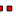

<!doctype html>
<html lang="en">
    <head>
        <meta charset="utf-8">
        <meta http-equiv="X-UA-Compatible" content="IE=edge">
        <meta name="viewport" content="initial-scale=1,user-scalable=no,maximum-scale=1,width=device-width">
        <meta name="mobile-web-app-capable" content="yes">
        <meta name="apple-mobile-web-app-capable" content="yes">
        <link rel="stylesheet" href="css/leaflet.css"><link rel="stylesheet" href="http://maxcdn.bootstrapcdn.com/font-awesome/4.6.1/css/font-awesome.min.css"><link rel="stylesheet" href="css/L.Control.Locate.min.css">
        <link rel="stylesheet" href="css/qgis2web.css">
        <link rel="stylesheet" href="css/leaflet-measure.css">
        <style>
        html, body, #map {
            width: 100%;
            height: 100%;
            padding: 0;
            margin: 0;
        }
        </style>
        <title></title>
    </head>
    <body>
        <div id="map">
        </div>
        <script src="js/qgis2web_expressions.js"></script>
        <script src="js/leaflet.js"></script><script src="js/L.Control.Locate.min.js"></script>
        <script src="js/multi-style-layer.js"></script>
        <script src="js/leaflet.rotatedMarker.js"></script>
        <script src="js/leaflet.pattern.js"></script>
        <script src="js/leaflet-hash.js"></script>
        <script src="js/Autolinker.min.js"></script>
        <script src="js/rbush.min.js"></script>
        <script src="js/labelgun.min.js"></script>
        <script src="js/labels.js"></script>
        <script src="js/leaflet-measure.js"></script>
        <script src="data/Parcelas_0.js"></script>
        <script src="data/Trochas_1.js"></script>
        <script src="data/Puntosimportantes_2.js"></script>
        <script src="data/Rutasdelasprcticas_3.js"></script>
        <script src="data/RutadeIquitosaJenaroHerrera_4.js"></script>
        <script>
        var map = L.map('map', {
            zoomControl:true, maxZoom:28, minZoom:1
        }).fitBounds([[-4.87447173428,-73.6560497834],[-4.86783110706,-73.6459380949]]);
        var hash = new L.Hash(map);
        map.attributionControl.addAttribution('<a href="https://github.com/tomchadwin/qgis2web" target="_blank">qgis2web</a>');
        L.control.locate().addTo(map);
        var measureControl = new L.Control.Measure({
            primaryLengthUnit: 'meters',
            secondaryLengthUnit: 'kilometers',
            primaryAreaUnit: 'sqmeters',
            secondaryAreaUnit: 'hectares'
        });
        measureControl.addTo(map);
        var bounds_group = new L.featureGroup([]);
        var basemap0 = L.tileLayer('http://a.tile.stamen.com/toner/{z}/{x}/{y}.png', {
            attribution: 'Map tiles by <a href="http://stamen.com">Stamen Design</a>,<a href="http://creativecommons.org/licenses/by/3.0">CC BY 3.0</a> &mdash; Mapdata: &copy; <a href="http://openstreetmap.org">OpenStreetMap</a>contributors,<a href="http://creativecommons.org/licenses/by-sa/2.0/">CC-BY-SA</a>',
            maxZoom: 28
        });
        basemap0.addTo(map);
        var basemap1 = L.tileLayer('http://{s}.tile.openstreetmap.org/{z}/{x}/{y}.png', {
            attribution: '&copy; <a href="http://openstreetmap.org">OpenStreetMap</a> contributors,<a href="http://creativecommons.org/licenses/by-sa/2.0/">CC-BY-SA</a>',
            maxZoom: 28
        });
        basemap1.addTo(map);
        var basemap2 = L.tileLayer('http://a.tile.stamen.com/terrain/{z}/{x}/{y}.png', {
            attribution: 'Map tiles by <a href="http://stamen.com">Stamen Design</a>,<a href="http://creativecommons.org/licenses/by/3.0">CC BY 3.0</a> &mdash;Map data: &copy; <a href="http://openstreetmap.org">OpenStreetMap</a>contributors,<a href="http://creativecommons.org/licenses/by-sa/2.0/">CC-BY-SA</a>',
            maxZoom: 28
        });
        basemap2.addTo(map);
        var basemap3 = L.tileLayer('http://{s}.tile.thunderforest.com/landscape/{z}/{x}/{y}.png', {
            attribution: '&copy; <a href="http://www.opencyclemap.org">OpenCycleMap</a>,&copy; <a href="http://openstreetmap.org">OpenStreetMap</a> contributors,<a href="http://creativecommons.org/licenses/by-sa/2.0/">CC-BY-SA</a>',
            maxZoom: 28
        });
        basemap3.addTo(map);
        function setBounds() {
        }
        function pop_Parcelas_0(feature, layer) {
            var popupContent = '<table>\
                    <tr>\
                        <td colspan="2">' + (feature.properties['num_brig'] !== null ? Autolinker.link(String(feature.properties['num_brig'])) : '') + '</td>\
                    </tr>\
                    <tr>\
                        <td colspan="2">' + (feature.properties['nombre'] !== null ? Autolinker.link(String(feature.properties['nombre'])) : '') + '</td>\
                    </tr>\
                    <tr>\
                        <td colspan="2">' + (feature.properties['largo_m'] !== null ? Autolinker.link(String(feature.properties['largo_m'])) : '') + '</td>\
                    </tr>\
                    <tr>\
                        <td colspan="2">' + (feature.properties['ancho_m'] !== null ? Autolinker.link(String(feature.properties['ancho_m'])) : '') + '</td>\
                    </tr>\
                </table>';
            layer.bindPopup(popupContent, {maxHeight: 400});
        }

        function style_Parcelas_0_0() {
            return {
                pane: 'pane_Parcelas_0',
                opacity: 1,
                color: 'rgba(0,0,215,1.0)',
                dashArray: '',
                lineCap: 'butt',
                lineJoin: 'miter',
                weight: 2.0, 
                fill: true,
                fillOpacity: 1,
                fillColor: 'rgba(102,165,228,1.0)',
            }
        }
        map.createPane('pane_Parcelas_0');
        map.getPane('pane_Parcelas_0').style.zIndex = 400;
        map.getPane('pane_Parcelas_0').style['mix-blend-mode'] = 'normal';
        var layer_Parcelas_0 = new L.geoJson(json_Parcelas_0, {
            attribution: '<a href=""></a>',
            pane: 'pane_Parcelas_0',
            onEachFeature: pop_Parcelas_0,
            style: style_Parcelas_0_0,
        });
        bounds_group.addLayer(layer_Parcelas_0);
        map.addLayer(layer_Parcelas_0);
        function pop_Trochas_1(feature, layer) {
            var popupContent = '<table>\
                    <tr>\
                        <td colspan="2">' + (feature.properties['trocha'] !== null ? Autolinker.link(String(feature.properties['trocha'])) : '') + '</td>\
                    </tr>\
                    <tr>\
                        <td colspan="2">' + (feature.properties['long_m'] !== null ? Autolinker.link(String(feature.properties['long_m'])) : '') + '</td>\
                    </tr>\
                    <tr>\
                        <td colspan="2">' + (feature.properties['azimut_gse'] !== null ? Autolinker.link(String(feature.properties['azimut_gse'])) : '') + '</td>\
                    </tr>\
                </table>';
            layer.bindPopup(popupContent, {maxHeight: 400});
        }

        function style_Trochas_1_0() {
            return {
                pane: 'pane_Trochas_1',
                opacity: 1,
                color: 'rgba(97,231,209,1.0)',
                dashArray: '10,5',
                lineCap: 'square',
                lineJoin: 'bevel',
                weight: 3.0,
                fillOpacity: 0,
            }
        }
        map.createPane('pane_Trochas_1');
        map.getPane('pane_Trochas_1').style.zIndex = 401;
        map.getPane('pane_Trochas_1').style['mix-blend-mode'] = 'normal';
        var layer_Trochas_1 = new L.geoJson(json_Trochas_1, {
            attribution: '<a href=""></a>',
            pane: 'pane_Trochas_1',
            onEachFeature: pop_Trochas_1,
            style: style_Trochas_1_0,
        });
        bounds_group.addLayer(layer_Trochas_1);
        map.addLayer(layer_Trochas_1);
        function pop_Puntosimportantes_2(feature, layer) {
            var popupContent = '<table>\
                    <tr>\
                        <td colspan="2">' + (feature.properties['nombre'] !== null ? Autolinker.link(String(feature.properties['nombre'])) : '') + '</td>\
                    </tr>\
                    <tr>\
                        <td colspan="2">' + (feature.properties['num_brig'] !== null ? Autolinker.link(String(feature.properties['num_brig'])) : '') + '</td>\
                    </tr>\
                </table>';
            layer.bindPopup(popupContent, {maxHeight: 400});
        }

        function style_Puntosimportantes_2_0() {
            return {
                pane: 'pane_Puntosimportantes_2',
                radius: 3.0,
                opacity: 1,
                color: 'rgba(0,0,0,1.0)',
                dashArray: '',
                lineCap: 'butt',
                lineJoin: 'miter',
                weight: 1,
                fill: true,
                fillOpacity: 1,
                fillColor: 'rgba(219,227,107,1.0)',
            }
        }
        map.createPane('pane_Puntosimportantes_2');
        map.getPane('pane_Puntosimportantes_2').style.zIndex = 402;
        map.getPane('pane_Puntosimportantes_2').style['mix-blend-mode'] = 'normal';
        var layer_Puntosimportantes_2 = new L.geoJson(json_Puntosimportantes_2, {
            attribution: '<a href=""></a>',
            pane: 'pane_Puntosimportantes_2',
            onEachFeature: pop_Puntosimportantes_2,
            pointToLayer: function (feature, latlng) {
                var context = {
                    feature: feature,
                    variables: {}
                };
                return L.circleMarker(latlng, style_Puntosimportantes_2_0(feature));
            },
        });
        bounds_group.addLayer(layer_Puntosimportantes_2);
        map.addLayer(layer_Puntosimportantes_2);
        function pop_Rutasdelasprcticas_3(feature, layer) {
            var popupContent = '<table>\
                    <tr>\
                        <td colspan="2">' + (feature.properties['nombre'] !== null ? Autolinker.link(String(feature.properties['nombre'])) : '') + '</td>\
                    </tr>\
                    <tr>\
                        <td colspan="2">' + (feature.properties['long_km'] !== null ? Autolinker.link(String(feature.properties['long_km'])) : '') + '</td>\
                    </tr>\
                </table>';
            layer.bindPopup(popupContent, {maxHeight: 400});
        }

        function style_Rutasdelasprcticas_3_0() {
            return {
                pane: 'pane_Rutasdelasprcticas_3',
                opacity: 1,
                color: 'rgba(236,12,102,1.0)',
                dashArray: '',
                lineCap: 'round',
                lineJoin: 'round',
                weight: 4.0,
                fillOpacity: 0,
            }
        }
        function style_Rutasdelasprcticas_3_1() {
            return {
                pane: 'pane_Rutasdelasprcticas_3',
                opacity: 1,
                color: 'rgba(255,255,255,1.0)',
                dashArray: '1,5',
                lineCap: 'round',
                lineJoin: 'round',
                weight: 3.0,
                fillOpacity: 0,
            }
        }
        map.createPane('pane_Rutasdelasprcticas_3');
        map.getPane('pane_Rutasdelasprcticas_3').style.zIndex = 403;
        map.getPane('pane_Rutasdelasprcticas_3').style['mix-blend-mode'] = 'normal';
        var layer_Rutasdelasprcticas_3 = new L.geoJson.multiStyle(json_Rutasdelasprcticas_3, {
            attribution: '<a href=""></a>',
            pane: 'pane_Rutasdelasprcticas_3',
            onEachFeature: pop_Rutasdelasprcticas_3,
            styles: [style_Rutasdelasprcticas_3_0,style_Rutasdelasprcticas_3_1,]
        });
        bounds_group.addLayer(layer_Rutasdelasprcticas_3);
        map.addLayer(layer_Rutasdelasprcticas_3);
        function pop_RutadeIquitosaJenaroHerrera_4(feature, layer) {
            var popupContent = '<table>\
                    <tr>\
                        <td colspan="2">' + (feature.properties['nombre'] !== null ? Autolinker.link(String(feature.properties['nombre'])) : '') + '</td>\
                    </tr>\
                    <tr>\
                        <td colspan="2">' + (feature.properties['long_km'] !== null ? Autolinker.link(String(feature.properties['long_km'])) : '') + '</td>\
                    </tr>\
                </table>';
            layer.bindPopup(popupContent, {maxHeight: 400});
        }

        function style_RutadeIquitosaJenaroHerrera_4_0() {
            return {
                pane: 'pane_RutadeIquitosaJenaroHerrera_4',
            }
        }
        map.createPane('pane_RutadeIquitosaJenaroHerrera_4');
        map.getPane('pane_RutadeIquitosaJenaroHerrera_4').style.zIndex = 404;
        map.getPane('pane_RutadeIquitosaJenaroHerrera_4').style['mix-blend-mode'] = 'normal';
        var layer_RutadeIquitosaJenaroHerrera_4 = new L.geoJson(json_RutadeIquitosaJenaroHerrera_4, {
            attribution: '<a href=""></a>',
            pane: 'pane_RutadeIquitosaJenaroHerrera_4',
            onEachFeature: pop_RutadeIquitosaJenaroHerrera_4,
            style: style_RutadeIquitosaJenaroHerrera_4_0,
        });
        bounds_group.addLayer(layer_RutadeIquitosaJenaroHerrera_4);
        map.addLayer(layer_RutadeIquitosaJenaroHerrera_4);
        var baseMaps = {'Stamen Toner': basemap0, 'OSM': basemap1, 'Stamen Terrain': basemap2, 'Thunderforest Landscape': basemap3};
        L.control.layers(baseMaps,{' Ruta de Iquitos a Jenaro Herrera': layer_RutadeIquitosaJenaroHerrera_4,' Rutas de las prácticas': layer_Rutasdelasprcticas_3,' Puntos importantes': layer_Puntosimportantes_2,' Trochas': layer_Trochas_1,' Parcelas': layer_Parcelas_0,}).addTo(map);
        setBounds();
        </script>
    </body>
</html>
